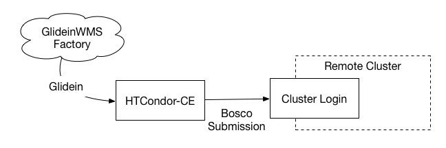
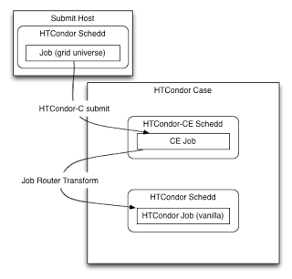
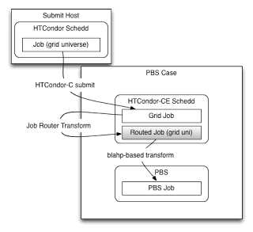

HTCondor-CE Overview¶
This document serves as an introduction to HTCondor-CE and how it works. Before continuing with the overview, make sure that you are familiar with the following concepts:
- An OSG site plan
- What is a batch system and which one will you use (HTCondor, PBS, LSF, SGE, or SLURM)?
- Security via host certificates to authenticate servers and bearer tokens to authenticate clients
- Pilot jobs, frontends, and factories (i.e., GlideinWMS, AutoPyFactory)
What is a Compute Entrypoint?¶
An OSG Compute Entrypoint (CE) is the door for remote organizations to submit requests to temporarily allocate local compute resources. At the heart of the CE is the job gateway software, which is responsible for handling incoming jobs, authenticating and authorizing them, and delegating them to your batch system for execution.
Most jobs that arrive at a CE (here referred to as "CE jobs") are not end-user jobs, but rather pilot jobs submitted from factories. Successful pilot jobs create and make available an environment for actual end-user jobs to match and ultimately run within the pilot job container. Eventually pilot jobs remove themselves, typically after a period of inactivity.
Note
The Compute Entrypoint was previously known as the "Compute Element".
What is HTCondor-CE?¶
HTCondor-CE is a special configuration of the HTCondor software designed to be a job gateway solution for the OSG Fabric of Services. It is configured to use the JobRouter daemon to delegate jobs by transforming and submitting them to the site’s batch system.
Benefits of running the HTCondor-CE:
- Scalability: HTCondor-CE is capable of supporting job workloads of large sites
- Debugging tools: HTCondor-CE offers many tools to help troubleshoot issues with jobs
- Routing as configuration: HTCondor-CE’s mechanism to transform and submit jobs is customized via configuration variables, which means that customizations will persist across upgrades and will not involve modification of software internals to route jobs
How CE Jobs Run¶
Once an incoming CE job is authorized, it is placed into HTCondor-CE’s scheduler where the JobRouter creates a transformed copy (called the routed job) and submits the copy to the batch system (called the batch system job). After submission, HTCondor-CE monitors the batch system job and communicates its status to the original CE job, which in turn notifies the original submitter (e.g., job factory) of any updates. When the job completes, files are transferred along the same chain: from the batch system to the CE, then from the CE to the original submitter.
Hosted CE over SSH¶
The Hosted CE is intended for small sites or as an introduction to providing capacity to collaborations. OSG staff configure and maintain an HTCondor-CE on behalf of the site. The Hosted CE is a special configuration of HTCondor-CE that can submit jobs to a remote cluster over SSH. It provides a simple starting point for opportunistic resource owners that want to start contributing capacity with minimal effort: an organization will be able to accept CE jobs by allowing SSH access to a login node in their cluster.
If your site intends to run over 10,000 concurrent CE jobs, you will need to host your own HTCondor-CE because the Hosted CE has not yet been optimized for such loads.
If you are interested in a Hosted CE solution, please follow the instructions on this page.

On HTCondor batch systems¶
For a site with an HTCondor batch system, the JobRouter can use HTCondor protocols to place a transformed copy of the CE job directly into the batch system’s scheduler, meaning that the routed and batch system jobs are one and the same. Thus, there are three representations of your job, each with its own ID (see diagram below):
- Access point: the HTCondor job ID in the original queue
- HTCondor-CE: the incoming CE job’s ID
- HTCondor batch system: the routed job’s ID

In an HTCondor-CE/HTCondor setup, files are transferred from HTCondor-CE’s spool directory to the batch system’s spool directory using internal HTCondor protocols.
Note
The JobRouter copies the job directly into the batch system and does not make use of condor_submit.
This means that if the HTCondor batch system is configured to add attributes to incoming jobs when they are
submitted (i.e., SUBMIT_EXPRS), these attributes will not be added to the routed jobs.
On other batch systems¶
For non-HTCondor batch systems, the JobRouter transforms the CE job into a routed job on the CE and the routed job submits a job into the batch system via a process called the BLAHP. Thus, there are four representations of your job, each with its own ID (see diagram below):
- Login node: the HTCondor job ID in the original queue
- HTCondor-CE: the incoming CE job’s ID and the routed job’s ID
- HTCondor batch system: the batch system’s job ID
Although the following figure specifies the PBS case, it applies to all non-HTCondor batch systems:

With non-HTCondor batch systems, HTCondor-CE cannot use internal HTCondor protocols to transfer files so its spool directory must be exported to a shared file system that is mounted on the batch system’s worker nodes.
How the CE is Customized¶
Aside from the basic configuration required in the CE installation, there are two main ways to customize your CE (if you decide any customization is required at all):
- Deciding which collaborations are allowed to run at your site: collaborations will submit resource allocation requests to your CE using bearer tokens, and you can configure which collaboration's tokens you are willing to accept.
- How to filter and transform the CE jobs to be run on your batch system: Filtering and transforming CE jobs (i.e., setting site-specific attributes or resource limits), requires configuration of your site’s job routes. For examples of common job routes, consult the JobRouter recipes page.
Note
If you are running HTCondor as your batch system, you will have two HTCondor configurations side-by-side (one
residing in /etc/condor/ and the other in /etc/condor-ce) and will need to make sure to differentiate the two
when editing any configuration.
How Security Works¶
Among OSG services, communication is secured between various parties using a combination of PKI infrastructure involving Certificate Authorities (CAs) and bearer tokens. Services such as a Compute Entrypoint, present host certificates to prove their identity to clients, much like your browser verifies websites that you may visit.
And to use these services, clients present bearer tokens declaring their association with a given collaboration and what permissions the collaboration has given the client. In turn, the service may be configured to authorize the client based on their collaboration.
Next steps¶
Once the basic installation is done, additional activities include:
- Setting up job routes to customize incoming jobs
- Submitting jobs to a HTCondor-CE
- Troubleshooting the HTCondor-CE
- Register the CE
- Register with the OSG GlideinWMS factories and/or the ATLAS AutoPyFactory